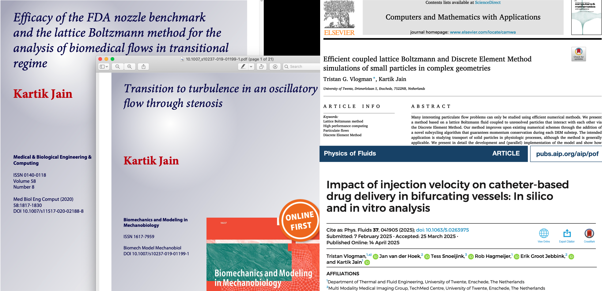
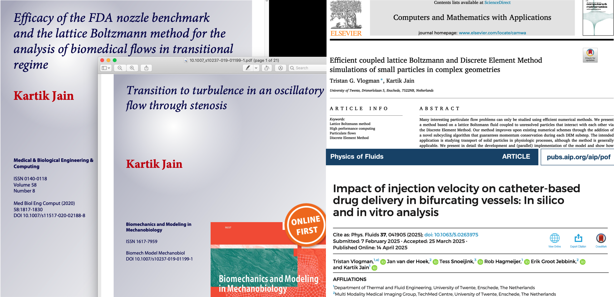

Department of Thermal and Fluid Engineering,
University of Twente,
The Netherlands
E-mail: k.jain@utwente.nl
 

Kartik Jain, Assistant Professor of Biofluid Dynamics,
Department of Thermal and Fluid Engineering,
University of Twente,
The Netherlands
E-mail: k.jain@utwente.nl